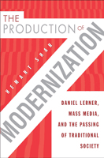

<body bgcolor="#FFFFFF" text="#000000" link="#0000FF" vlink="#CC0000" alink="#CC0000"><center><hr width="350" size="1" align="center" noshade>How Daniel Lerner's seminal work contributed to the overall professionalization of communication theory and sociology<hr width="350" size="1" align="center" noshade><p><a href="https://cdcshoppingcart.uchicago.edu/Cart/ChicagoBook.aspx?ISBN=9781439906248&&PRESS=temple" target="_top">Buy this book!</a> | <a href="https://cdcshoppingcart.uchicago.edu/Cart/Cart.aspx?PRESS=temple" target="_top">View Cart</a> | <a href="https://cdcshoppingcart.uchicago.edu/Cart/Cart.aspx?PRESS=temple" target="_top">Check Out</a></p><p></p></center><!--none//--><h1>The Production of Modernization</h1>
<H2>Daniel Lerner, Mass Media, and "The Passing of Traditional Society"</H2>
<h3>Hemant Shah</h3>
<P>cloth 1-4399-0624-6 $75.50, Mar 11, <FONT COLOR=#990033>Available</FONT>
<br>Electronic Book 1-4399-0626-2 $75.50 <FONT COLOR=#990033>Available</FONT>
<BR> 226 pp
6x9
6&nbsp;tables 1&nbsp;figure
</P><BLOCKQUOTE><I>"Shah�s extensive archival research is really the treasure of </I>The Production of Modernization<I>. He has unearthed and smartly contextualized dozens of fascinating documents that help to frame not only Daniel Lerner�s career but wider currents in Cold War social science that Lerner reflected. I can�t emphasize enough how impressive is the author�s close, almost obsessive reading of the archival material. </i>The Production of Modernization<i> makes a genuine contribution to scholarship."</I>
<BR>&#151<B>Jefferson Pooley</B>, Assistant Professor of Media and Communication at Muhlenberg College<i></I></BLOCKQUOTE>
<p>Daniel Lerner's 1958 book <em>The Passing of Traditional Society</em> was central in shaping Cold War&#8211;era ideas about the use of mass media and culture to promote social and economic progress in postcolonial nations. Based on a study of the effectiveness of propaganda in the Middle East, Lerner�s book claimed that exposure to American media messages could motivate �traditional� people in the postcolonial nations to become �modern� by cultivating empathy for American ideas, goods, and ways of life. </p>
<p><em>The Production of Modernization</em> examines Lerner�s writings to construct the intellectual trajectory of his thinking about mass media and modernization up to and beyond the publication of his famous book. Shah has written not just an intellectual biography of Lerner but also a history of the discipline he shaped.</p>
<BR>&nbsp;<h2>Excerpt</h2><P>Excerpt available at <a href="http://www.temple.edu/tempress">www.temple.edu/tempress</a></p>
<BR>&nbsp;<h2>Reviews</h2>
<p><I>"Impressive in its insights, perceptive in making connections to lives, works, and intellectual traditions, </I>The Production of Modernization<I> takes us through an unusual journey of the development of the field. The scope of Shah�s book is considerable, based as it is on the biography of one, albeit highly influential, individual in national and international development circles. Skillful handling of data from diverse sources and cogent narration help the reader understand the political and social contexts from within which the notion of modernization, and subsequently development communication, emerged. Shah�s writing is lucid and accessible, and this book is a pleasure to read."</I>
<br>&#151<b>Sujatha Sosale</b>, Associate Professor at the School of Journalism and Mass Communication, The University of Iowa
<p><i>"Shah probes the origins and underpinnings of modernization, which he argues has defined US international policy for the past seven decades... Tying the concept of modernization to social scientist Daniel Lerner's book </i>The Passing of Traditional Society: Modernizing the Middle East<i> (1958), the author provides abundant evidence that [Daniel] Lerner's ideas are at the core of US Middle Eastern policy and infuse two generations of scholarship about the cultural influence of mass media.... [T]his look at the impact of Lerner's modernization theories on US global policies makes for engaging reading.... Well written and well annotated, this insightful volume... will serve those interested in mass communication, diplomacy, and international relations. Summing Up: Recommended." </i><br>&#151<b><i>Choice</i></b>
<p><i>"The book is well written and clearly organized.... The book�s central contribution is its deep and nuanced telling of 'how Passing of Traditional Society came together�historically, intellectually, geopolitically, culturally." </i><br>&#151<b><i>Contemporary Sociology</i></b>
<BR>&nbsp;<h2>Contents</h2><P>
<p>Acknowledgments<br>
1. Introduction: The Rise of Modernization Theory<br>
2. Lerner at the Psychological Warfare Division: Propaganda and the Effectiveness of Mass Media<br>
3. Lerner at Stanford: Tools of the Social Science Trade<br>
4. Lerner at Columbia: The Voice of America&rsquo;s Turkey Studies<br>
5. Lerner at MIT: The Key Elements of <em>Passing of Traditional Society</em><br>
6. After <em>Passing of Traditional Society</em>: The Persistence and Meaning of &ldquo;Lerner&rdquo;<br>
Notes<br>
Bibliography<br>
Index</p>
</P><BR>&nbsp;<H2>About the Author(s)</H2>
<P><strong>Hemant Shah</strong> is Professor in the School of Journalism and Mass Communication at the University of Wisconsin-Madison. He is coauthor (with Michael C. Thornton) of <em>Newspaper Coverage of Interethnic Conflict: Competing Visions of America</em>, and co-editor (with Michael Curtin) of <em>Re-Orienting Global Communication: Indian and Chinese Media Beyond Borders</em>.</P>
<BR><H2>Subject Categories</H2>
<p><A HREF="/tempress/mass_media.html" TARGET="_top">Mass Media and Communications</a>
<BR><A HREF="/tempress/sociology.html" TARGET="_top">Sociology</a>
<BR><A HREF="/tempress/american.html" TARGET="_top">American Studies</a>
</p>
<p align="center"><a href="https://cdcshoppingcart.uchicago.edu/Cart/ChicagoBook.aspx?ISBN=9781439906248&&PRESS=temple" target="_top">Buy this book!</a> | <a href="https://cdcshoppingcart.uchicago.edu/Cart/Cart.aspx?PRESS=temple" target="_top">View Cart</a> | <a href="https://cdcshoppingcart.uchicago.edu/Cart/Cart.aspx?PRESS=temple" target="_top">Check Out</a></p><p><font face="Arial" size="1"><a href="copyright.html" onMouseOver="window.status='Web Copyright Policy';return true;" onMouseOut="window.status=''" title="Web Copyright Policy">&copy;</a> 2015 <a href="http://www.temple.edu" target="new" onMouseOver="window.status='Link to Temple University home page';return true;" onMouseOut="window.status=''" title="Link to Temple University home page">Temple University</a>. All Rights Reserved. http://www.temple.edu/tempress/titles/2142_reg.html</font></p>